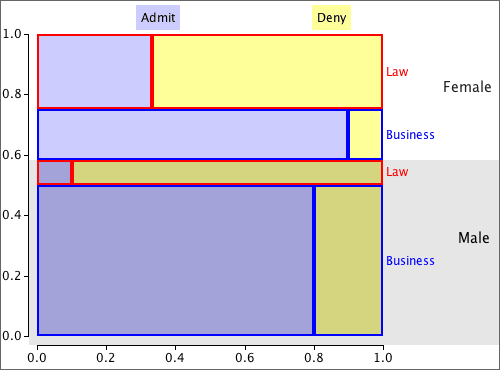

Lurking variables and relationships between categorical variables
When the direction of the relationship reverses, the effect is called Simpson's paradox. As with other 'paradoxes', there is no real contradiction; it just takes a bit more thought to understand why your initial intuition is wrong.
College admission and gender
The table below describes admission rates of male and female students into the Business and Law Schools of a university.
| Admission | ||||
|---|---|---|---|---|
| Gender | Admit | Deny | Total | P(Admit) |
| Male | 490 | 210 | 700 | 0.700 |
| Female | 280 | 220 | 500 | 0.560 |
A naive examination of the data suggests that females have a lower probability of being admitted, but the opposite is true if the applicants are split into the two different degrees.
| Business | |||||
| Admission | |||||
|---|---|---|---|---|---|
| Gender | Admit | Deny | Total | P(Admit) | |
| Male | 480 | 120 | 600 | 0.800 | |
| Female | 180 | 020 | 200 | 0.900 | |
| Law | |||||
| Admission | |||||
| Gender | Admit | Deny | Total | P(Admit) | |
| Male | 010 | 090 | 100 | 0.100 | |
| Female | 100 | 200 | 300 | 0.333 | |
Proportional Venn diagram
Simpson's paradox is explained in the proportional Venn diagram below — in it, each rectangle is proportional to the number of women with these values for the variables.

Most of the males applied to the Business school (where admittance rates were high) and this increased their overall admittance rate compared to the females.